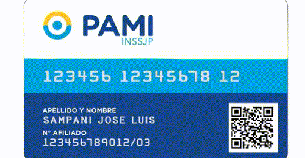
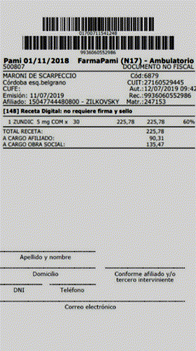
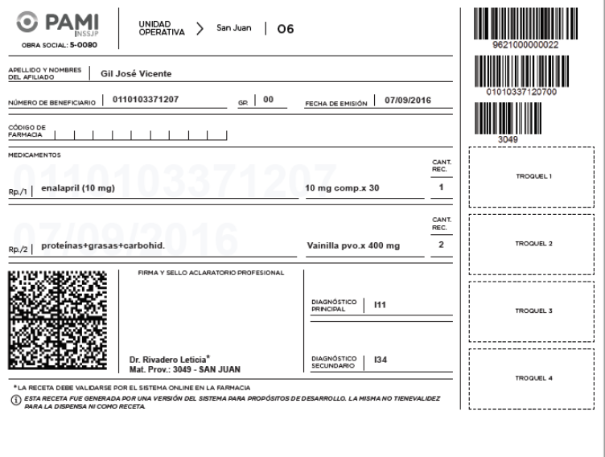

¿Cómo se piden los remedios de PAMI en la farmacia?
Para solicitar los remedios por PAMI, el afiliado debera dar la credencial o decir su numero de beneficiario.
Con este numero nos podremos fijar las recetas disponibles en sistema que haya hecho el médico.

Una vez autorizadas, el afiliado o tercero (recordemos que firma con sus datos quien retira los medicamentos de la farmacia) deberá firmar donde dice conforme afiliado y completar sus datos (Nombre y Apellido, DNI, Domicilio, etc).

En caso de que la receta sea manual se deberá completar los mismos datos y firmar en el dorso de la receta
ATENCIÓN:Si el médico realiza las recetas por 3 meses, las mismas apareceran a partir de la fecha que las hizo. Ejemplo: si hizo las recetas el 05/01/2022 durante los proximos 2 meses siguientes las recetas apareceran despues del numero 5 de cada mes (05/02/2022- 05/03/2022). Las recetas NO apareceran en el sistema de validación antes de esa fecha.